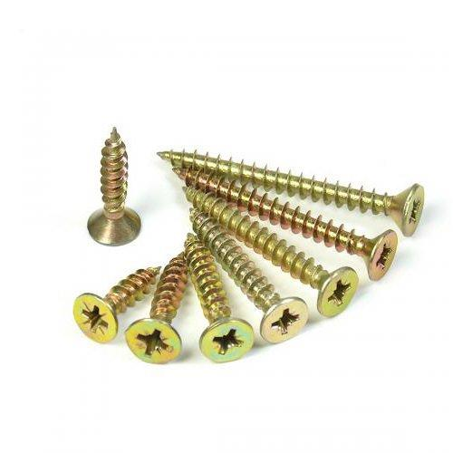
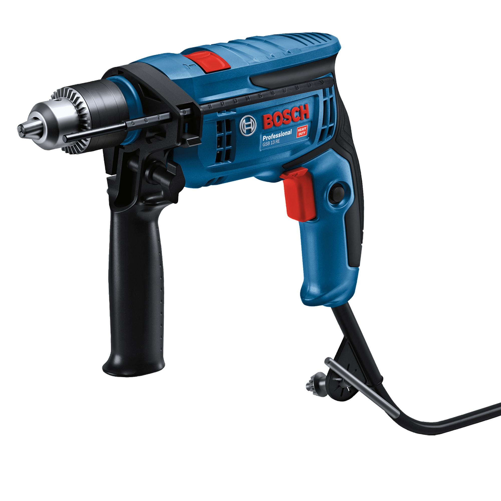
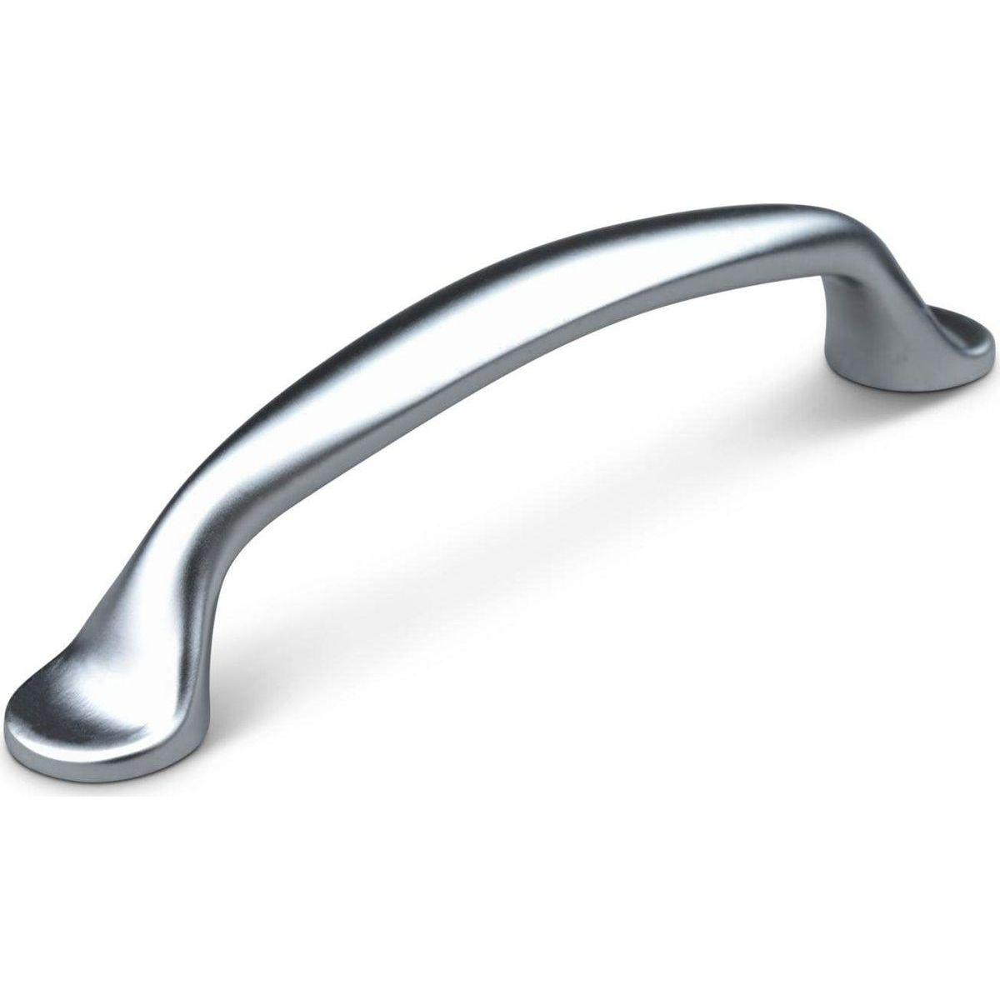

🤝
Honestidade e Transparência
Acreditamos que relações duradouras se constroem com verdade e respeito. Cada negociação reflete nosso compromisso ético com você.
Tradição, qualidade e confiança para transformar seus projetos em realidade.
CONHEÇA NOSSOS PRODUTOSSeja bem-vindo à Alternativa Ferragens! Nossa história começou em 2007, nascida de uma estrutura familiar e impulsionada pelo desejo de fazer a diferença em Araras (SP).
Nossa trajetória começou com o propósito de atender às necessidades dos profissionais da marcenaria de Araras e região. Com o passar dos anos, crescemos junto aos nossos clientes, ampliando nossa variedade de produtos e soluções para acompanhar as transformações do mercado.
Hoje, buscamos oferecer qualidade, praticidade e confiança, contribuindo para a realização de projetos, desde os mais simples até os mais elaborados.
Atualmente, a Alternativa Ferragens atende a diferentes públicos, oferecendo soluções que vão desde as necessidades dos profissionais da marcenaria até os projetos de quem gosta de colocar a mão na massa.
Nosso compromisso é oferecer produtos de qualidade e praticidade para manutenção, pequenos reparos, instalações residenciais e diversas atividades do dia a dia, sempre com um atendimento próximo.
Se você precisa criar, consertar ou renovar, a Alternativa é a sua parceira ideal!
Valores que fazem parte da nossa história.
Acreditamos que relações duradouras se constroem com verdade e respeito. Cada negociação reflete nosso compromisso ético com você.
Dedicamos nosso tempo para entender as necessidades de cada cliente e oferecer soluções práticas e de qualidade.
Trabalhamos com fornecedores e parceiros que compartilham nosso compromisso com a qualidade e a confiança.
Buscamos inovação e melhorias constantes, acompanhando as tendências do mercado para oferecer novas soluções.
Na Alternativa Ferragens, a tradição de um atendimento próximo e familiar caminha junto com a busca contínua pelo novo.
Conte conosco para transformar suas ideias e projetos em realidade! Alternativa Ferragens — Desde 2007Conheça algumas das soluções que você encontra na Alternativa Ferragens.

Parafusos, dobradiças, corrediças e muito mais.

Furadeiras, brocas e ferramentas manuais.

Puxadores e acessórios para móveis e instalações.
Clique em um card para destacá-lo.
Rua Cedros, 227
Jardim Francisco Buzolin
Araras – SP
CEP: 13601-265
Como ChegarPRECISA DE AJUDA PARA ENCONTRAR O PRODUTO IDEAL?
NOSSA EQUIPE ESTÁ PRONTA PARA AJUDAR VOCÊ!
Acompanhe nossas novidades e entre em contato.